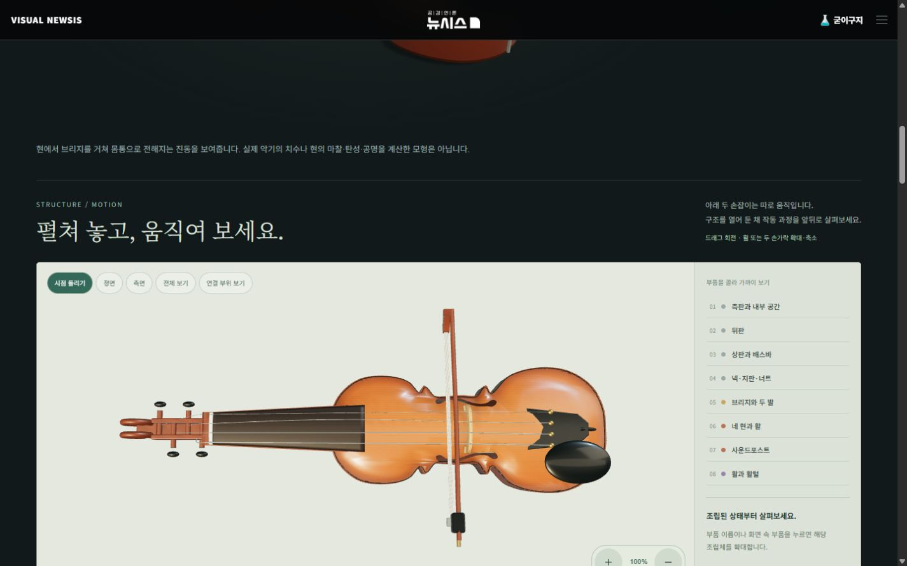
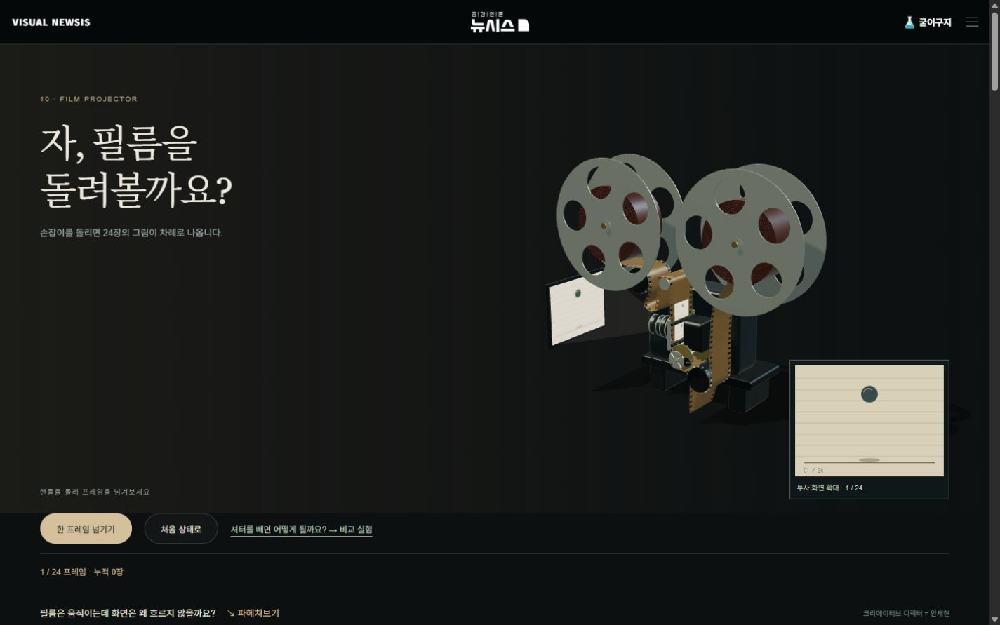
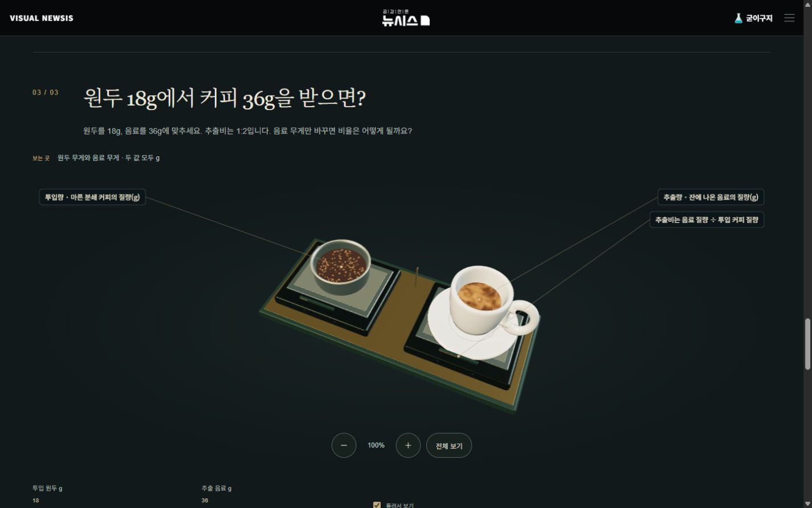

바이올린 · 상판과 f홀
실제 페이지 열기 ↗
검수 범위: 바이올린·영사기·에스프레소와 공통 관찰 UI. 관련 검사 89개 통과. 실제 GPT·Claude에 코드와 화면을 전달하고 지적을 수정했습니다. 정지 화면 검토·코드 검토·실기기 검증은 구분했습니다.
PC 1440×900 · 모바일 390×844 viewport 확인. 실제 휴대폰 기기 검증과 실물 CAD 정확도 인증은 포함하지 않습니다. 제네바 잠금 원호는 생략한 교육 모형입니다.
상세 기록 · GPT 검수 원문 · Claude 검수 원문


